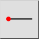
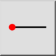
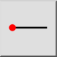
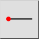

Horisontal linje
Værktøjslinje/ikon:
 

Menu: Tegne > Line > Horisontal linje
Genvej: L, H
Kommandoer: linehorizontal | lh
Dette er en automatisk oversættelse.
Værktøjslinje/ikon:
 

Menu: Tegne > Line > Horisontal linje
Genvej: L, H
Kommandoer: linehorizontal | lh
Brug dette værktøj til at skabe vandrette linjer. Dette værktøj bruges ligesom værktøjet til linjer i en given vinkel, bortset fra at vinklen er fastlåst til at være vandret.